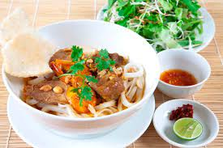

Quang noodle

Ingredients
Pork meat
Shrimps
Crispy cakes
Noodle
Onion
veggies
Steps
Bed of veges
Top with noodles
Ladle on broth
Add toppings
See also
How to cook quang noodle
Mi quan noodle
Return to homepage